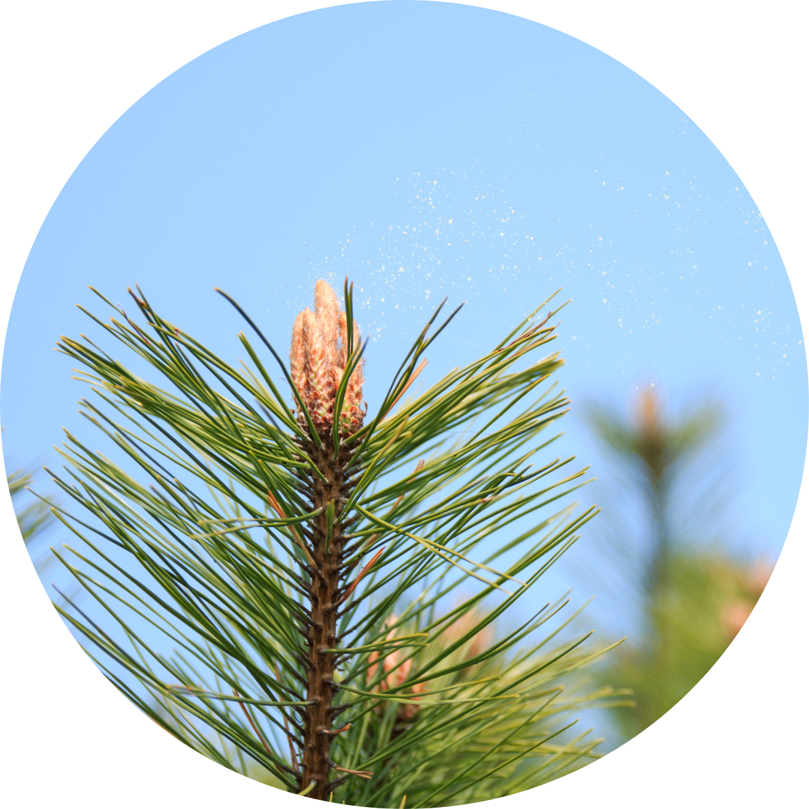
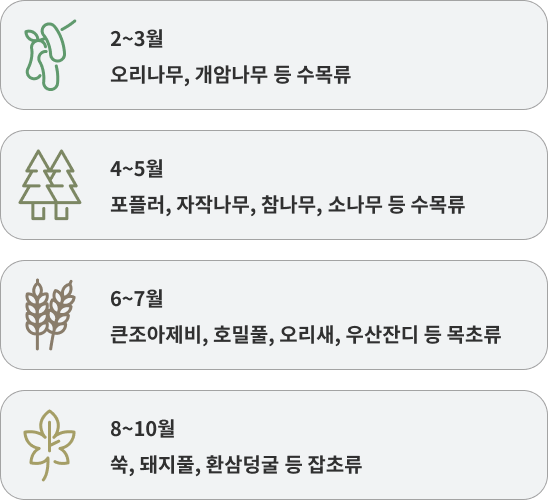
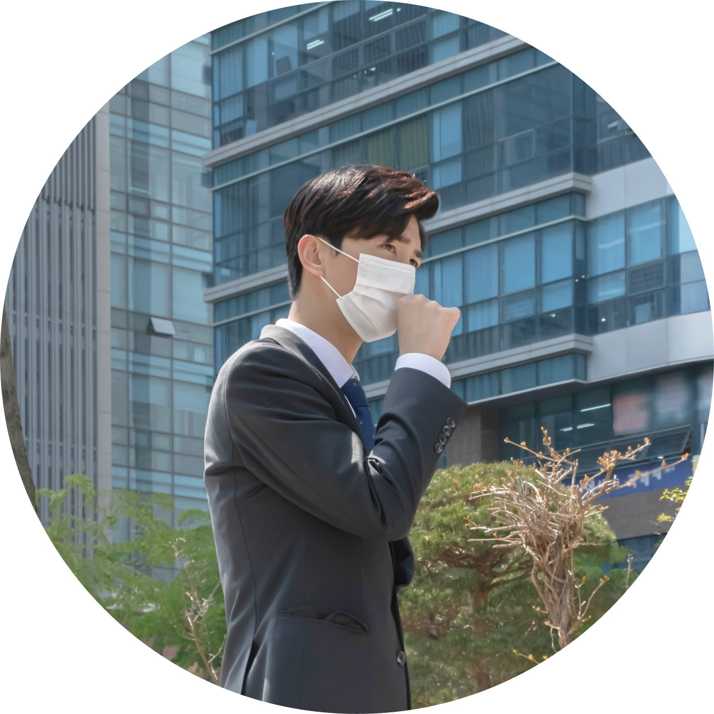
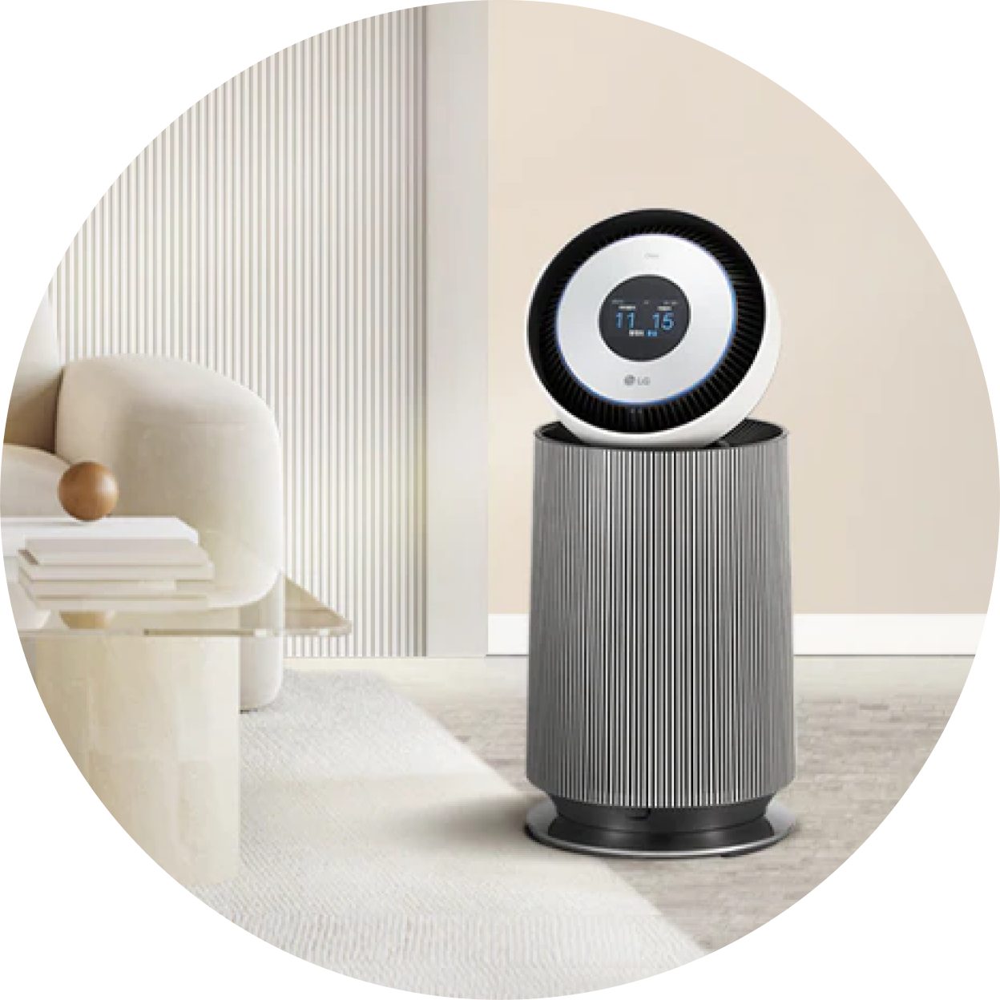
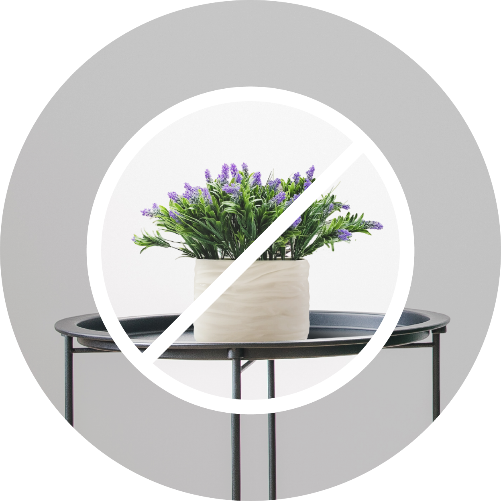

에어공기청정기


보다 더 스마트한 일상
LG ThinQ의 시작

보다 더 스마트한 일상, LG ThinQ
씽큐는 사람과 가전을 AI 기술로 연결하여 더 편리하고 놀라운 일상을 만드는 LG전자의 스마트 홈 플랫폼입니다.
* 본 콘텐츠는 ThinQ 앱의 콘텐츠입니다.
꽃 피는 계절엔 알레르기도 함께 와요
나들이하기 좋은 계절이 와도 꽃가루 알레르기가 있다면 참 슬프죠. 꽃가루 알레르기의 원인을 알면 예방법도 알 수 있어요.
꽃가루 알레르기란?
꽃가루 알레르기는 3월~5월 경 소나무의 송홧가루와 풍매화의 꽃가루가 원인이 되어 알레르기성 비염이나 천식, 피부염 같은 알레르기 질환이 일어나는 상황을 말해요.

꽃가루 알레르기의 원인
우리가 흔히 생각하는 보기에 좋은 벚꽃이나 장미꽃의 꽃가루들은 조심해야 되는 꽃가루에 포함되지 않아요. 그건 참 다행이죠?
오히려 자작나무, 참나무 등이 가장 중요한 알레르기 원인이죠.
여름엔 잔디, 가을엔 쑥이나 환삼덩굴 같은 잡초류들이 알레르기를 일으키는데 더 중요한 원인이 된답니다.
꽃가루는 날리는 계절이 정해져 있기 때문에, 계절에 따라 알레르기의 원인이 되는 꽃가루도 달라요.
꽃가루는 기온이 높고 맑은 날 잘 퍼지는데, 강한 바람보다는 약한 바람이 불 때 공중으로 높이 떠올라 더 멀리 퍼져요. 그렇기 때문에 알레르기가 있는 경우 바람이 살랑살랑 불 때 더 조심해야 하죠.
4월부터 10월 사이에는 야외 활동 전에 꽃가루 농도 위험 지수도 확인하는 것이 좋아요.
알레르기의 원인이 되는 시기 별 꽃가루

-
꽃가루농도위험지수 확인 방법
기상청 날씨누리 홈페이지(https://www.weather.go.kr/) > 테마날씨 > 생활기상정보 > 보건기상지수 > 꽃가루농도위험지수 에서 확인할 수 있어요.
꽃가루 알레르기의 증상
꽃가루 알레르기는 계절에 따라 증상이 나타나기 때문에 콧물, 코막힘 등의 비염 증상이나 호흡 곤란, 기침 등의 천식 증상 또는 가려움증 등의 피부염 증상이 특정 계절에만 있다면 꽃가루 알레르기를 의심해 볼 수 있어요.
-
정확한 진단을 위해서는 병원에 방문하여 피부단자 시험 등의 알레르기 원인물질 검사를 해보는 게 좋아요.
꽃가루 알레르기 예방법
01
꽃가루 접촉 피하기
마스크와 안경, 모자 등을 착용하여 피부와 눈 등이 꽃가루와 직접 접촉하지 않도록 하고, 꽃가루가 잘 달라붙는 니트나 털옷은 입지 않는 것이 좋겠죠?

02
외출 후 깨끗이 씻기
손과 얼굴, 눈은 물로 씻고 비염이 있다면 식염수나 옅은 소금물로 콧속을 깨끗이 씻는 것도 도움이 돼요.
03
야외활동 자제하기
알레르기가 있다면 꽃가루가 날리는 날에는 야외 활동을 자제하고, 실내에서는 창문을 잘 닫고 공기청정기로 공기를 정화하세요. 빨래도 밖에 널어 말리지 않도록 해요.

04
집안에서 꽃나무와 화초 기르지 않기
알레르기가 심한 경우에는 집안에 꽃나무나 화초를 기르지 않는 것이 좋아요.

알레르기 원인 물질과의 접촉은 피하고, 면역력을 키워주는 비타민 D를 많이 얻을 수 있도록 하루 30분씩 창가에서 햇볕을 쬐어 주면 좋아요.


LG ThinQ
ThinQ 하나로 더 좋아지는 일상
일상을 더 편하고 스마트하게 만들어주는 씽큐 앱을 지금 바로 만나보세요.
- #꽃가루
- #공기청정기
- #계절
- #알레르기
- #꽃가루알레르기
- #꽃가루농도
- #알레르기증상
- #알레르기예방법
출처 및 고지사항
[에코에너지기술연구소] 청소기 클리닝 ATLAS 개발 보고서 (2022.08)